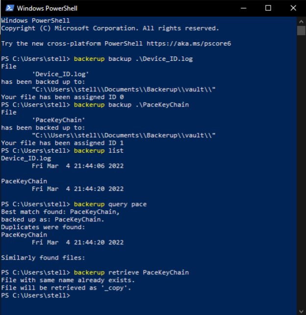

Hello there; I am Philip!
AKA Sir. Arctifox
AKA Cpt. Squirrel
Internet Aliases
A novice programmer amongst other things from Sweden. Welcome to my portfolio.
My name is Philip Bromander. I live in Sweden and is currently (as of 2024) studying a bachelor of innovative programming at Linköping University. I love working with computers and I have been playing video games since I was seven years old or so. My first programming language was Lua when I was very young and I used it for hobby projects up until I started using C#. However, the language I have used the most is C and C++. I started working with C++ during my first year of secondary school. I have deep interest in most things military which has been fueled by a lot of war games and simulations. I am also interested in working with computer graphics in the future. There is something intriguing with constructing vast digital scapes. Outside of working with computers I like to be hands-on with mechanical things, such as working on the car whenever I can.
Here I host a few of my projects, those that are worth actually taking a look at. I'm a handy person who likes to tinker with both theoretical and practical problems and programming is just one out of many hobbies. When it comes to programming I work primarily in C++. I have worked with many languages so far such as Lua, C#, C and C++, Ruby, Python, SQF, PHP, SQL, and recently been testing some Zig. And then of course I have worked with HTML, CSS, and JavaScript to create this wonderful portfolio. Among there I have also tested SCSS. In other web-dev courses I have also worked with databases, interacting with PHP and SQL. In an earlier school I also got somewhat familiar with Microsoft Windows Server 2012 R2.
The area in programming that interest me the most is probably computer graphics. The background of this portfolio was made by me from scratch in JavaScript using canvas elements and render buffers. It went through multiple iterations from random lines spanning the sides making a criss-cross pattern to now bubbles that interact with each other. Fun fact: there is actually a very small and obscure bug with the current implementation on how bubbles interact with each other. Can you spot it? On the topic of 3D graphics, a dream for me would be creating a game engine or render engine of some sorts; perhaps to pursue the goal of creating a video game?
Other than programming I like to work with 3D art. In particular hard-surface modelling - though I would like get better at organic modelling too - and I use Blender for all my 3D needs. I like practical work too and 3D printing ties in well with the hobby of 3D modelling. Worth mentioning as well is my pride in my writing excellence. Punctuation, to be precise. Even in SMS' or in-game text chats I will still be typing out my full stops and apostraphes when others would simply forgo any and all punctuation; it's muscle memory at this point.
I know it might not be much but you can find me here:

Here are a few of my projects to check out:
This Portfolio Site
It was made by me for a school project.It contains nearly everything I've made, of which I am proud of.
This portfolio was originally made for a web-dev course and became well overdue. It features a tiny autobiography about myself and a few projects that I have worked on and are worthwhile sharing. It features seemingly well working responsive layout and a nice live background created from scratch in JavaScript and Canvas elements. There is not much to say about this Portfolio, it's really "what you see is what you get".
Why not have a little peek at how the background is rendered?
function updateCanvas()
{
//Remove the existing Canvas and replace it with new canvas
var canvasContainer = document.getElementById("canvas_container");
canvasContainer.removeChild(document.getElementsByClassName("canvas")[0]);
var canvas = document.createElement("canvas");
canvas.classList.add("canvas");
canvas.width = window.innerWidth;
canvas.height = window.innerHeight;
canvasContainer.appendChild(canvas);
animate();
}
In essence, Backerup is like most other back up utilities out there except due to time constrains I could not add all features I wanted. This project may or may not be revisited to be finalised at a later date. With that said, the program is entirely usable in its current state though safety of data can not be guarenteed. The program is written in C++ and uses the library TinyXML2 for XML data handling and other than this library the project is all homebrewed code.
The purpose of the project was to make up the bulk of my final assignment in school. I wrote an essay (in Swedish) together with the development of the program which detailed the purpose, design, theory, execution, and the final product. The work was examined and graded. But the idea of the project was not only for a school project. The original idea goes back a few years when I was simply brainstorming things to do. The idea of making a general purpose backup utility sprung in to mind which led to the first actual plannings of the project being written. After a short while the project was shelved only to be revitalized during the school project.
Here's a screenshot of Backerup at work:

My Conways Game of Life was made in C# during my second year in Gymnasium in a programming course and it once upon a time did work but due to devilish optimisation I accidentally broke the program right before hand-in. It has been broken ever since but I will eventually return to the project and finish the optimised version, or so it the plan anyways. The linked GitHub page is the "Reborn" version - that would be the most up to date version - but the original is still up and public on my GitHub profile.
Whilst I do not have any working executable showing a working Conways game, I do have a few backed up executables from the development showing a few really cool looking patterns produced by various bugs (that were eventually ironed out). Here are a few of them in GIF form:
 |
 |
 |
The program was made in MonoGame and, even though I had no prior experience with MonoGame or the alikes, the development process was surprisingly very straightforward.